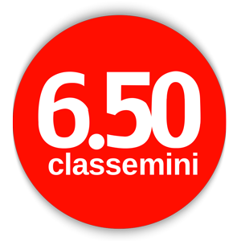
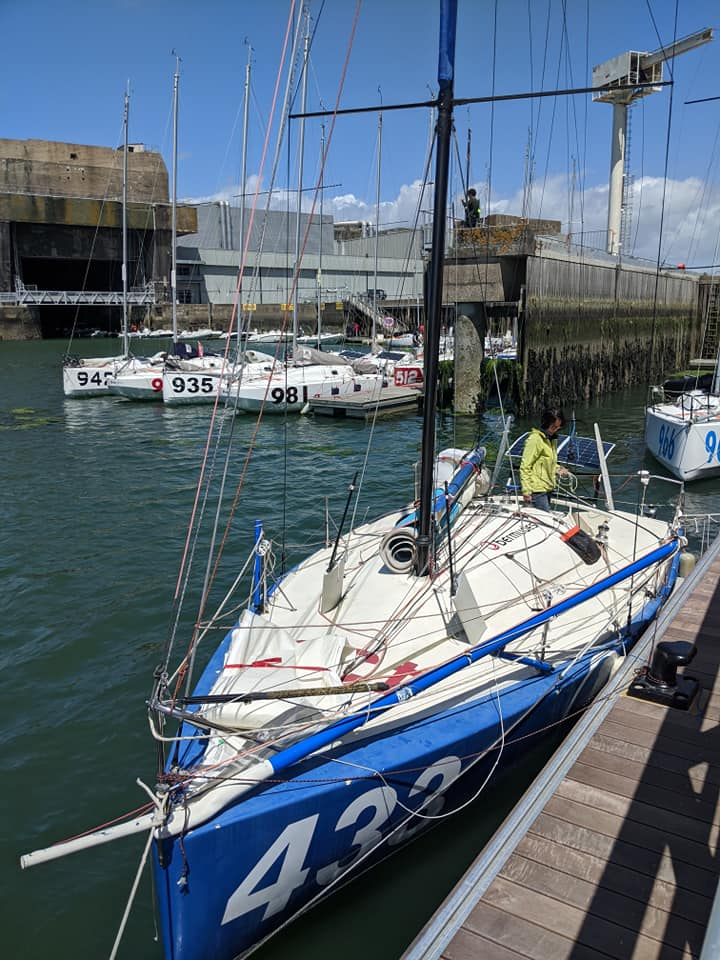
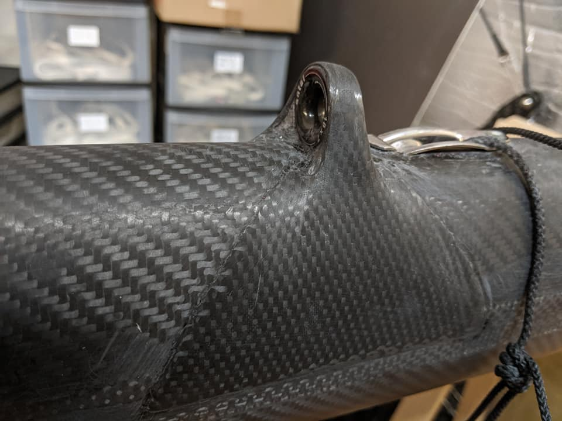
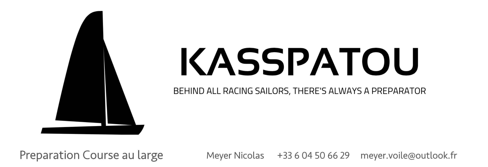
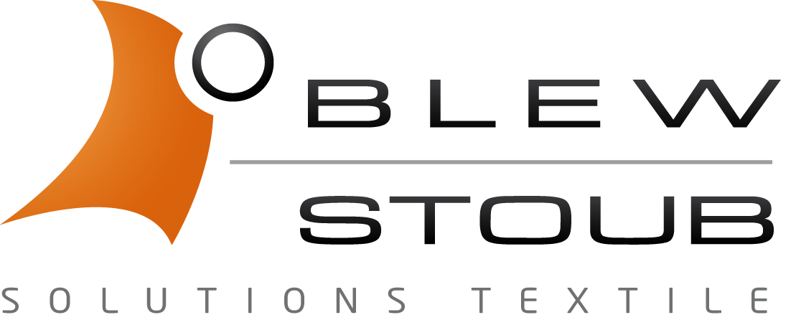
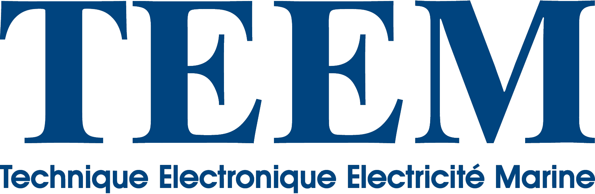
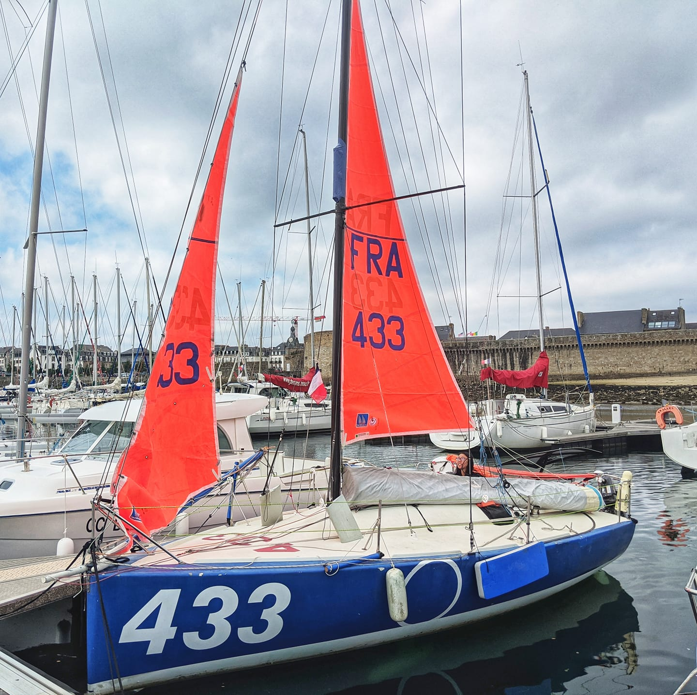

Voici plus d'un an, que Rémy s'est lancé dans ce projet et toujours pas d'article ? Il était temps !
La décision
Au Salon du Nautic à Paris en Décembre 2018, je décide de me lancer dans un projet Mini.
Ça fait un moment qu'on m'en parle, j'ai suivi Clarisse sur l'Atlantique en 2016/2017 et j'ai bien envie de faire du Pogo 3 en solitaire.
Je rencontre Clarisse au Nautic, juste avant l'annonce de son partenariat IMOCA avec Banque Populaire et elle réponds à mes questions et m'encourage à me lancer.
Le bateau
Investir dans un Pogo 3 c'est 80000€ d'occasion et plus de 100000€ neuf. Autant dire, un sacré investissement, plus du double de ce que je suis prêt à investir pour un premier bateau.
Je finis par tomber sous le charme de Amazig, le proto Manuard #433 sur lequel Corentin Douguet remporte la Mini Transat 2005.
Une belle machine qui a passé plus de 10 ans sous hangar et qui a besoin d'un bon chantier.
Pablo, son récent propriétaire, accepte de me guider dans les premières étapes du chantier et me permet de régler en 3 fois sur 8 mois.
Un beau chantier
On m'avait un peu prévenu, le proto c'est quand même plus de bricolage que le série.
C'est aussi un peu exiguë car l'espace a l'intérieur est plutôt bien encombré par le système de bascule de la quille et les réservoirs d'eau de mer des ballasts.
Avant de pouvoir naviguer, il va falloir bricoler et avant de courrir mettre le bateau à la jauge.
Il y a également un peu d'appréhension de ma part et je ne me vois pas partir en mer avec un bateau qui pourrait tomber en panne ou pire casser.
Chantier composite
- La trappe de survie doit maintenant être sur charnière.
- On décide d'installer une chaise moteur pour les manœuvres de port en entraînement.
- La porte est également refaite ainsi qu'un support de panneau solaire et d'instruments éléctronique.
Chantier électricité
Batteries HS, les batteries du bateau on rendu l'âme, je décide de partir sur des batteries Lithium avec un circuit de charge via panneaux solaires.
2 panneaux de 150W chacun ont été fixé à l'arrière sur un support. Un troisième panneau volant (pour le mettre au soleil et non à l'ombre de la GV.) peut se déployer depuis le cockpit. Ça permet de dépoter mais uniquement lorsqu'il y a du soleil…
2 feux de secours branchés sur batteries sont maintenant demandés sur le tableau arrière.
Chantier électronique
Sondeur et speedo ne fonctionne plus, les vieux écrans n'affichent pas très bien les infos, il faut également remplacer le Mer Veille par un AIS.
Chantier mât
Les bastaques sont inutilisables de même que les étais, les haubans et les filliaires rouillés, sans compter le poids de ces câbles inox.
Le vernis du mât ne supporte pas non plus sa sortie à la lumière du jour et les pontets de drisse de réas sont également à remplacer.
À peine remâté qu'une sortie plus tard, nous voilà de nouveau sur le terre-plein pour de longs mois.
Le chantier du mât est finalement le plus long et le plus complexe car de nombreuses pièces d'accastillages ont du être refaites, les êtrémités de barres de flèches ont été usinées, les fixations au niveau du pont transformée pour les haubans textiles (qui n'ont pas de pas de vis).
Chantier sécu
Évidemment tout le matériel sécu a expiré et est périmé, Charlotte et Séverine feront un travail rigoureux pour vérifier et sélectionner tout le matériel nécessaire.
Matelotage
Les cordages ont également été un gros travail notamment sur le bout dehors et les différentes drisses, écoutes, bastaques, haubans.
Remerciements

Je tenais tout d'abord à remercier toutes les personnes qui m'encouragent dans ce projet.
Séverine, Charlotte, Pablo, Nico, Aurélien, Alban, Robin, Renaud, Hannah, Valentin, Murielle, Vincent, Sabine, Timothée, Pascal, Agnès, Mathilde, Valentine et tous les autres.
Je tenais plus précisément à remercier Kasspatou (notamment Nico, Arno et Mado), Blew Stoub (notamment Vincent, Arnaud et Marie), la Sellor (notamment Gildas et Yannick) et TEEM (notamment Aurélien et Carole) qui ont fait un travail remarquable pour m'accompagner dans ces chantiers, prenant parfois sur leurs week-ends, prettant du matériel, un hangar, étant source de bonnes astuces et de bonnes idées afin de remettre ce magnifique bateau en état de courrir à nouveau.
  La suite ?
Il y a bien des occasions de baisser les bras, mais quand on regarde en arrière, les choses avancent malgré tout et on mesure le chemin parcouru pour en arriver là.
Aujourd'hui nous sommes à la veille de la Duo Concarneau, nous avons fait quelques entraînements avec Séverine, notamment un aller-retour Lorient-Sein dans la pétole, le convoyage Lorient-Concarneau et un aller-retour Lorient-Sauzon express.
Demain après midi, le bateau passe à la jauge, avec notamment le fameux test de redressement.
Vu la météo, pas sur que la course soit maintenue mais la première victoire c'est d'être sur la ligne et quel marathon pour en arriver là !